|
|
|||
 |
 |
|
|
| Windows Windows : Kodi-16.1.exe (Guide) |
Amazon Fire TV / Stick Fire TV ARM : Kodi-16.1.apk (Guide) |
Android (Phones/Tablets) Android ARM : Kodi-16.1.apk (Guide) |
Android SPMC Android ARM : SPMC-16.7.2.apk (Guide) |
Step 1. Install Kodi from above to your prefered Operating System.
Step 2. Turn "Web Safe" off from your broadband provider. ( How to )
Step 3. To install a custom build follow the selected RED steps in the screenshots below...
Step 2. Turn "Web Safe" off from your broadband provider. ( How to )
Step 3. To install a custom build follow the selected RED steps in the screenshots below...
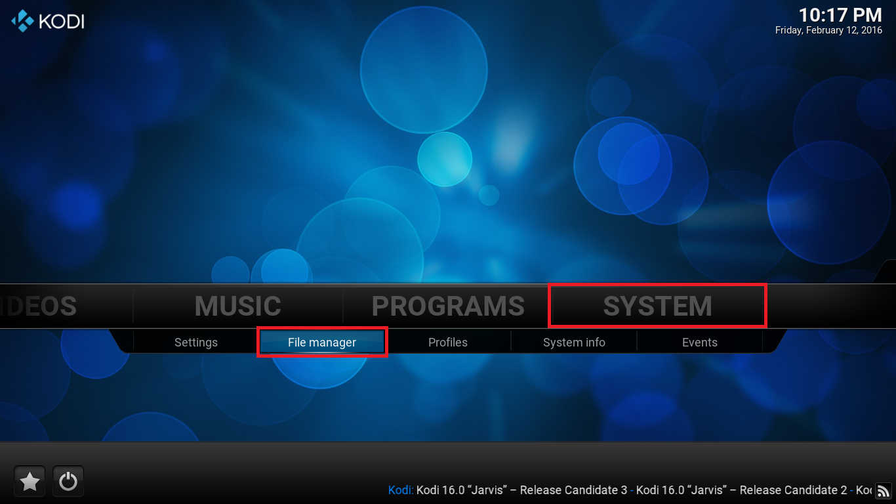
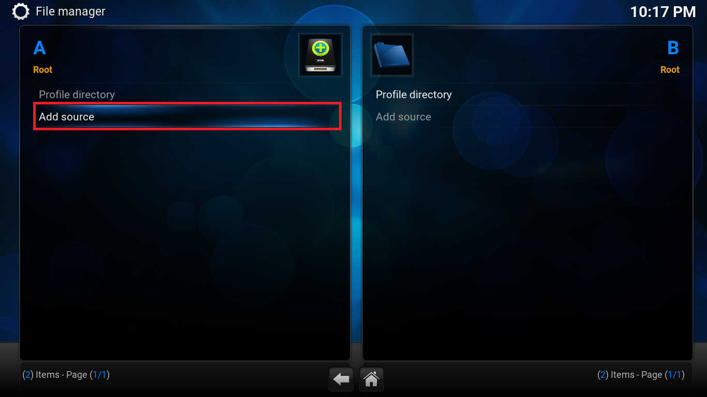
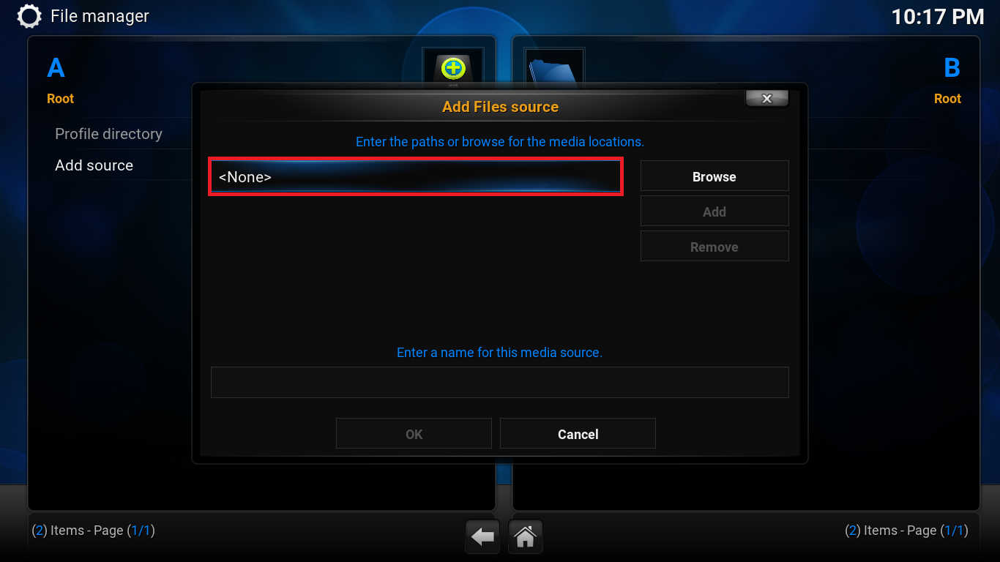
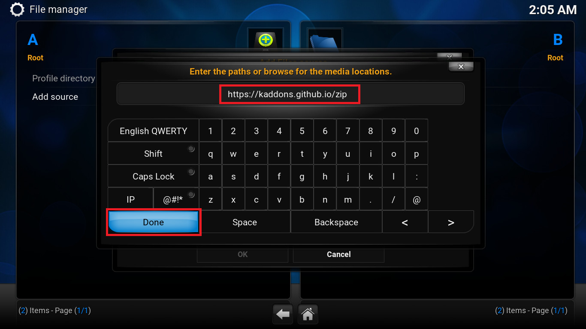
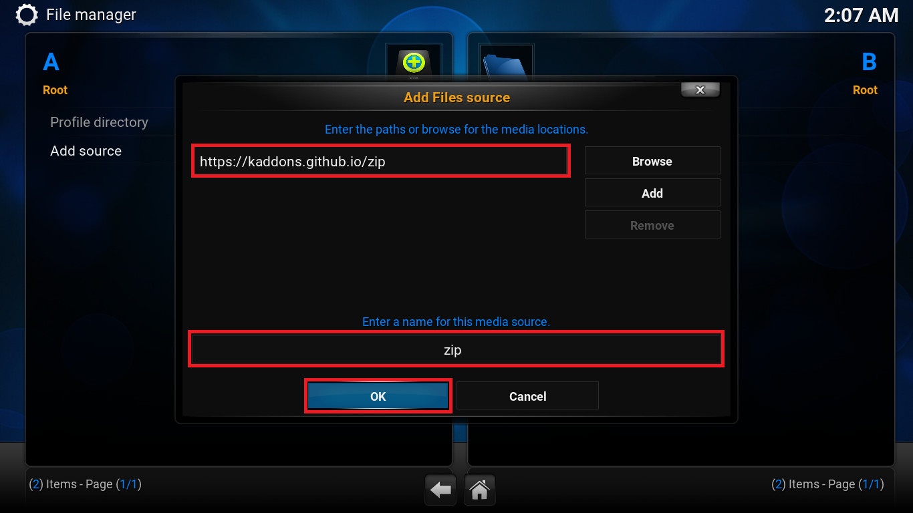
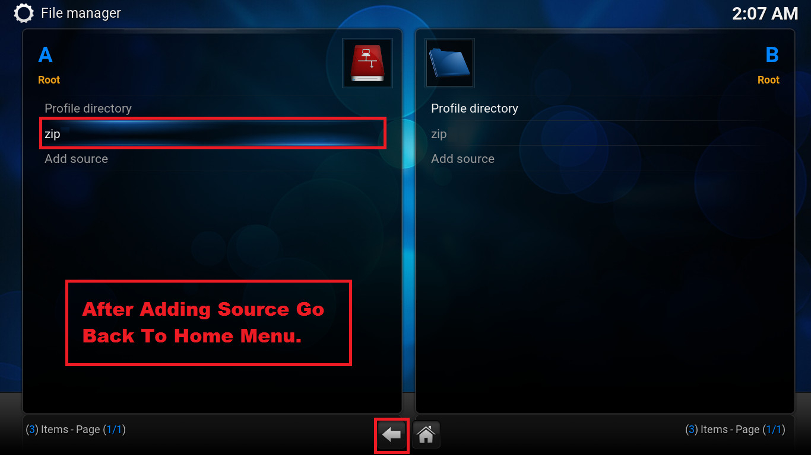
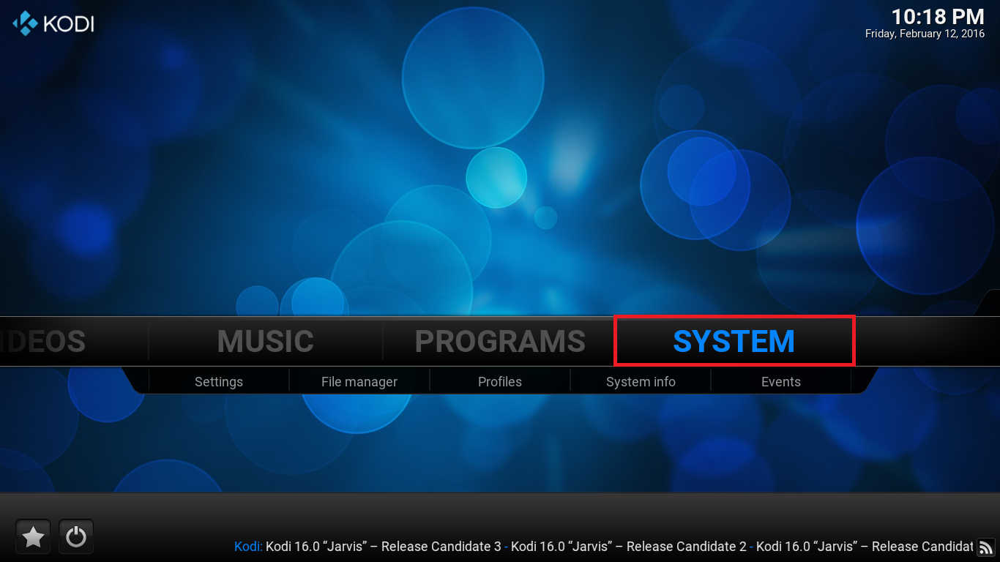
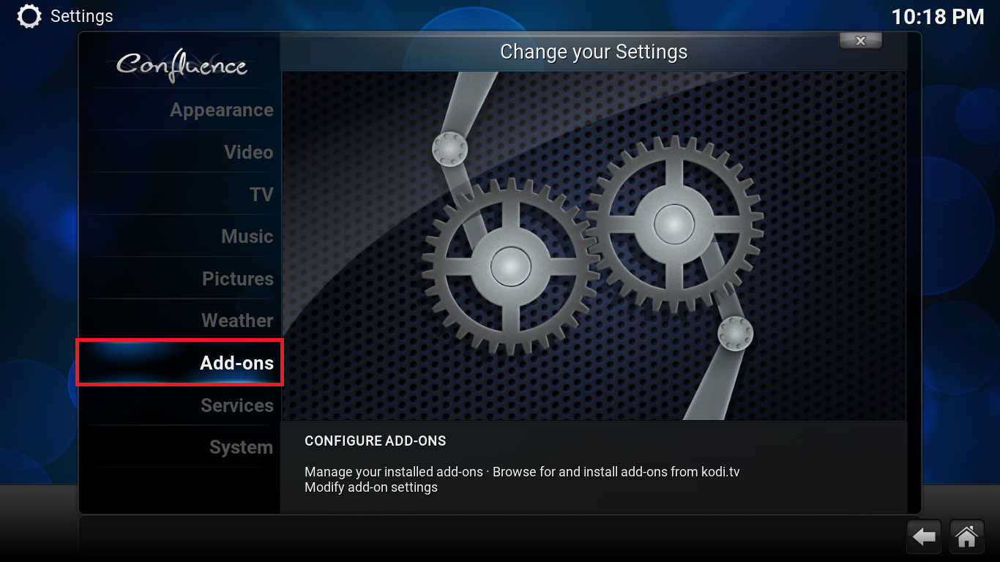
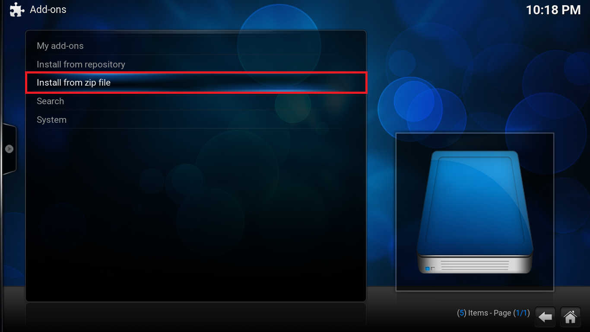
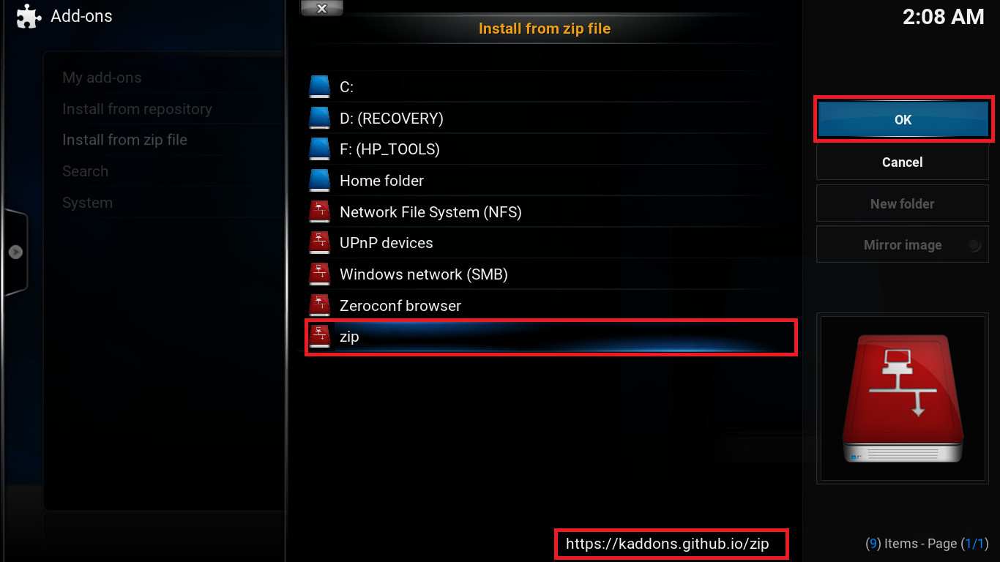
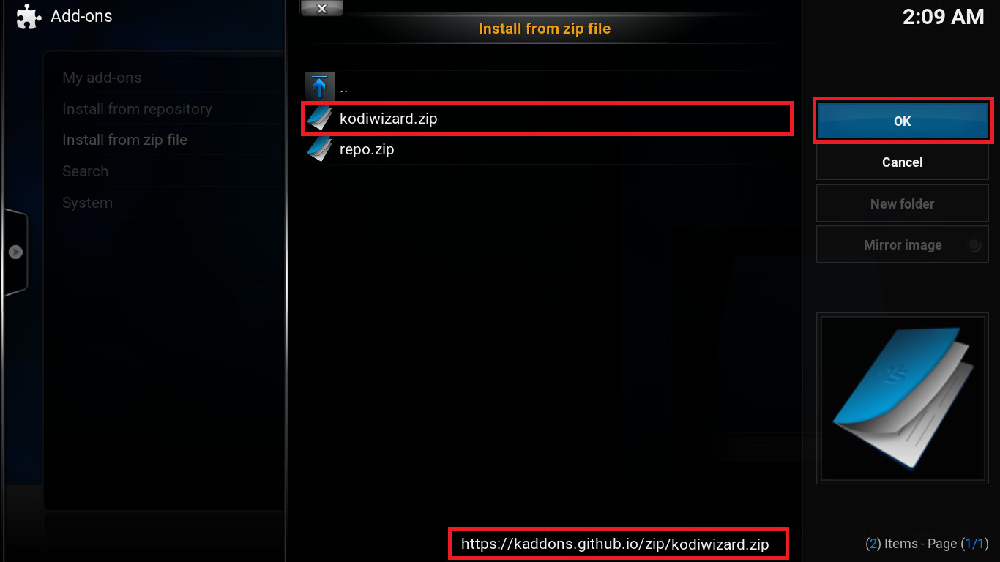
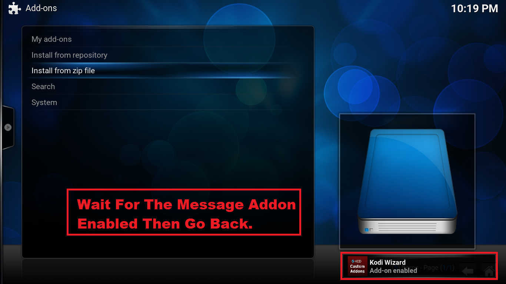
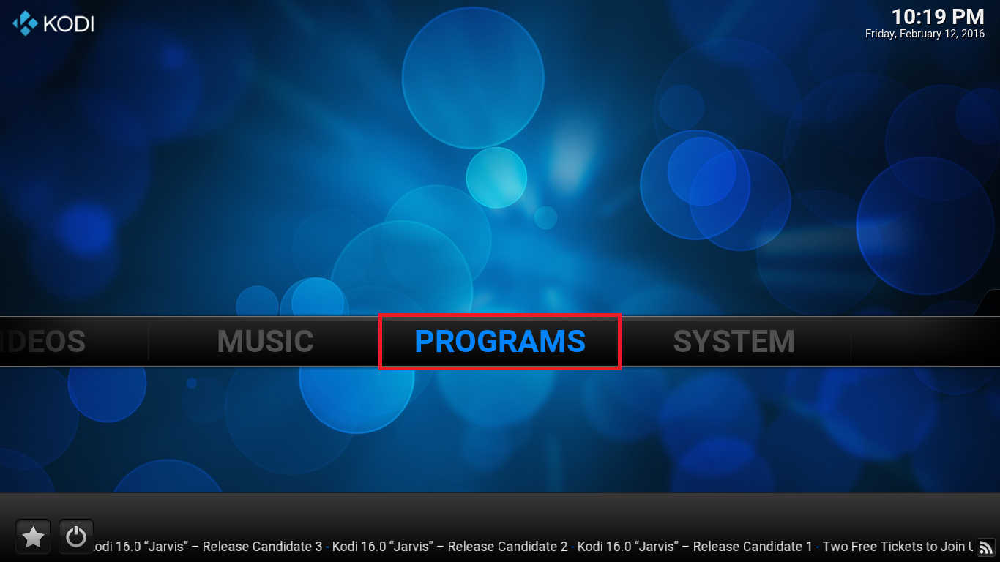
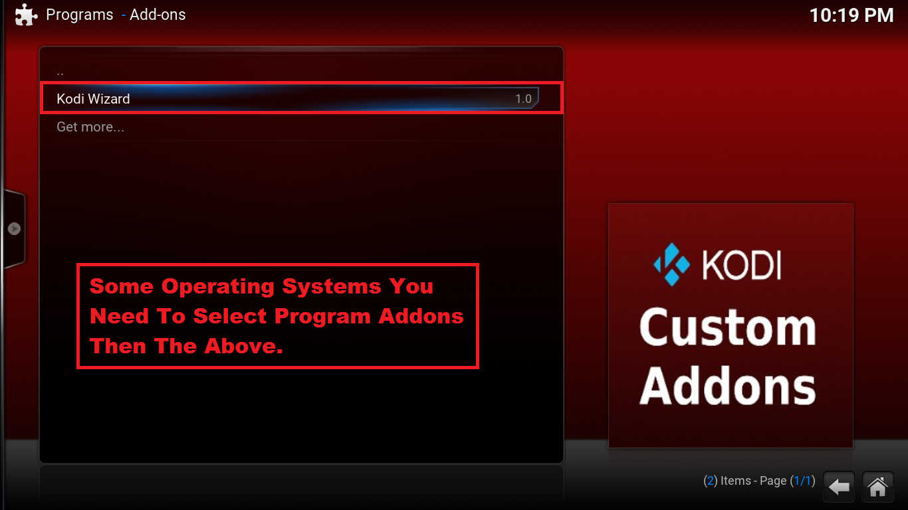
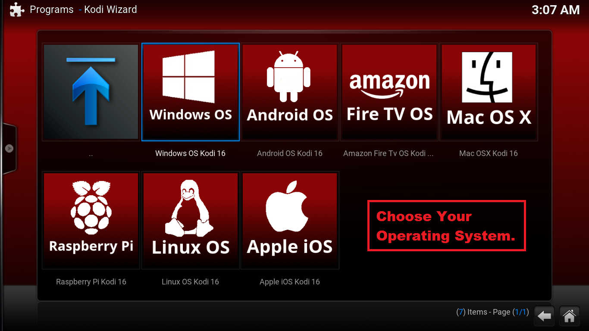
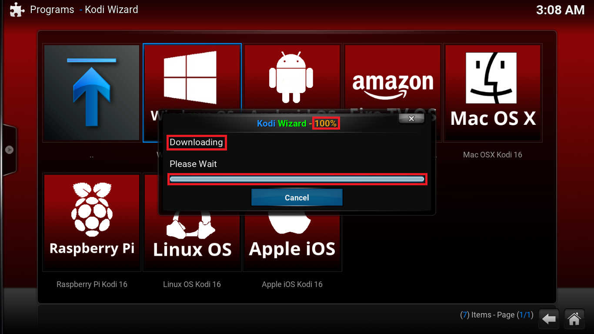
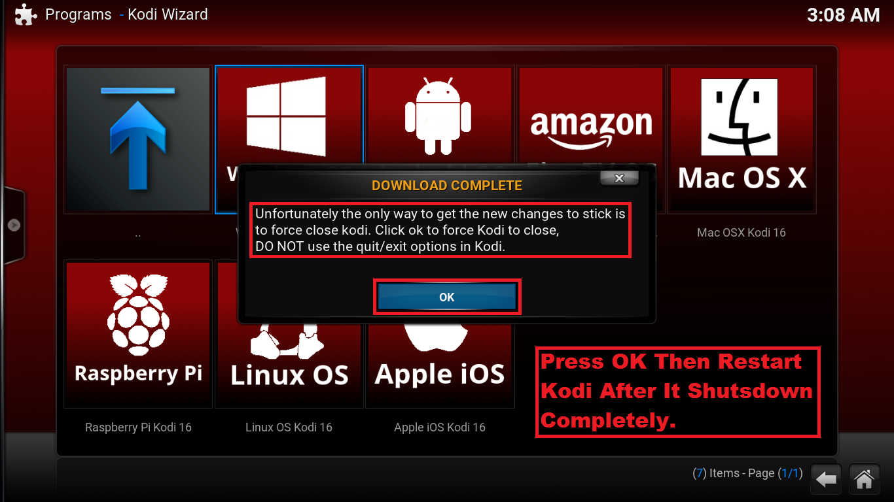
Fire TV and Android users need to force close Kodi by rebooting or unpluging device.
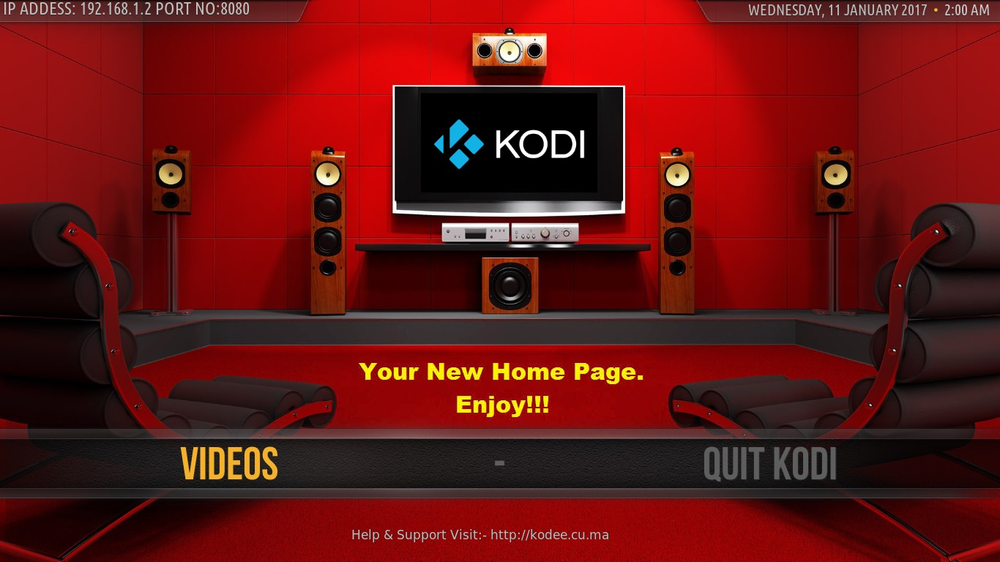